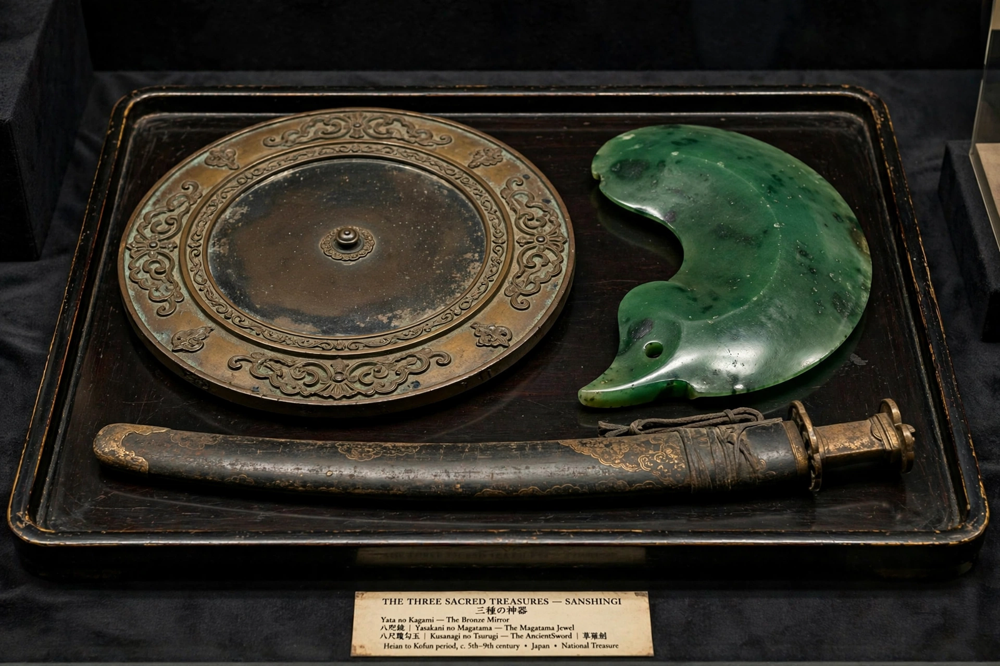

| Imperial Regalia of Japan (Sanshu no Jingi) | |
|---|---|
| Sword | Kusanagi no Tsurugi — kept at Atsuta Shrine, Nagoya (replica in Tokyo) |
| Mirror | Yata no Kagami — kept at the Ise Grand Shrine (replica in Tokyo) |
| Jewel | Yasakani no Magatama — kept at the Imperial Palace, Tokyo |
| Function | Legitimise the accession of the Emperor of Japan |

The Imperial Regalia of Japan (三種の神器, Sanshu no Jingi, "Three Sacred Treasures") are three legendary artefacts — a sword, a mirror and a jewel — that together serve as the regalia of the Emperor of Japan and symbolise the legitimacy of the imperial throne. Because of their sacred status, the original objects are never displayed to the public and are rarely seen even by emperors; their exact nature and condition are matters of tradition and speculation.
According to the Kojiki and Nihon Shoki, Amaterasu bestowed the three treasures on her grandson Ninigi-no-Mikoto when he descended from Takamagahara to rule the earth, and they passed to his descendant Emperor Jimmu. At imperial accessions, the sword (or its replica) and jewel are presented to the new emperor in the kenji-tō-shōkei no gi ceremony; the presentation of the regalia in 2019 to Emperor Naruhito was one of the rare occasions on which the boxed treasures were seen in public.